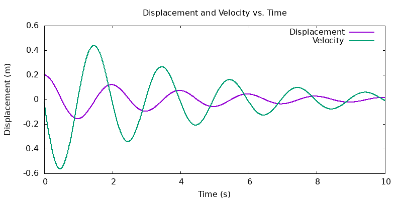
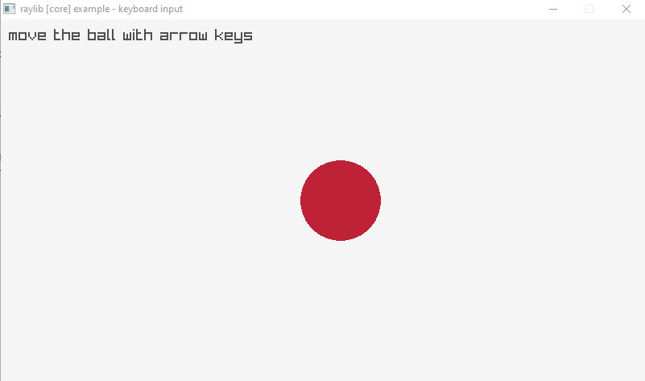

w8 <<
Previous Next >> setup
C_lib
本課程針對 C 程式語言的教學將使用下列程式庫:
gnuplot: https://github.com/gnuplot/gnuplot
數值分析繪圖程式庫 - 在機電設計流程中, 工程師運用數值分析法進行設計與模擬運算後, 將數據存檔, 可利用 gnuplot 繪圖指令, 以令人容易理解的圖形呈現數值分析結果.
範例:
euler_gnuplot_msd_ex1.c
執行結果:

gd: https://github.com/libgd/libgd
泛用繪圖程式庫 - 工程師在產品開發或製造程序中, 可利用線條(例如: 特殊齒輪外型)、字串(例如: 製造日期或保固訊息)或塗色區域(特定標誌、二維條碼或 QRCode)進行一般標誌或圖像繪圖.
範例:
gd_ex1.c
執行結果:
gd_ex1.png
gd_ex1.jpg
raylib: https://github.com/raysan5/raylib
raygui: https://github.com/raysan5/raygui
https://www.raylib.com/cheatsheet/raylib_cheatsheet_v4.0.pdf
電玩程式庫 - 工程師可將機電流程中與產品設計或製造程序有關的系統, 透過與使用者互動呈現逼真的模擬過程或結果, 也可用來開發與機電系統有關的虛擬整合套件(例如: 透過與實體感測器或影像辨識系統結合, 將實時運動競賽中的運動員動作與虛擬實境或擴增實境系統結合), 也可用來開發電動遊戲(raylib-games).
下載 Tiny C Compiler with gd and raylib 程式庫.7z (需要下載密碼)
範例:
move_red_dot.c
/*******************************************************************************************
*
* raylib [core] example - Keyboard input
*
* Example originally created with raylib 1.0, last time updated with raylib 1.0
*
* Example licensed under an unmodified zlib/libpng license, which is an OSI-certified,
* BSD-like license that allows static linking with closed source software
*
* Copyright (c) 2014-2023 Ramon Santamaria (@raysan5)
*
********************************************************************************************/
// move_red_dot.c
/* on Replit, add pkgs.raylib to replit.nix
use cc move_red_dot.c -lraylib to compile and link
use ./a.out to execute and move the red dot with arrow keys
*/
// on Portable system, use cc=tcc.exe -run -lgd -lraylib to run
#include "raylib.h"
//------------------------------------------------------------------------------------
// Program main entry point
//------------------------------------------------------------------------------------
int main(void)
{
// Initialization
//--------------------------------------------------------------------------------------
const int screenWidth = 800;
const int screenHeight = 450;
InitWindow(screenWidth, screenHeight, "raylib [core] example - keyboard input");
Vector2 ballPosition = { (float)screenWidth/2, (float)screenHeight/2 };
SetTargetFPS(60); // Set our game to run at 60 frames-per-second
//--------------------------------------------------------------------------------------
// Main game loop
while (!WindowShouldClose()) // Detect window close button or ESC key
{
// Update
//----------------------------------------------------------------------------------
if (IsKeyDown(KEY_RIGHT)) ballPosition.x += 2.0f;
if (IsKeyDown(KEY_LEFT)) ballPosition.x -= 2.0f;
if (IsKeyDown(KEY_UP)) ballPosition.y -= 2.0f;
if (IsKeyDown(KEY_DOWN)) ballPosition.y += 2.0f;
//----------------------------------------------------------------------------------
// Draw
//----------------------------------------------------------------------------------
BeginDrawing();
ClearBackground(RAYWHITE);
DrawText("move the ball with arrow keys", 10, 10, 20, DARKGRAY);
DrawCircleV(ballPosition, 50, MAROON);
EndDrawing();
//----------------------------------------------------------------------------------
}
// De-Initialization
//--------------------------------------------------------------------------------------
CloseWindow(); // Close window and OpenGL context
//--------------------------------------------------------------------------------------
return 0;
}
在 Replit 與近端程式環境執行結果:
啟動後以鍵盤方向鍵上下左右控制紅點.

w8 <<
Previous Next >> setup